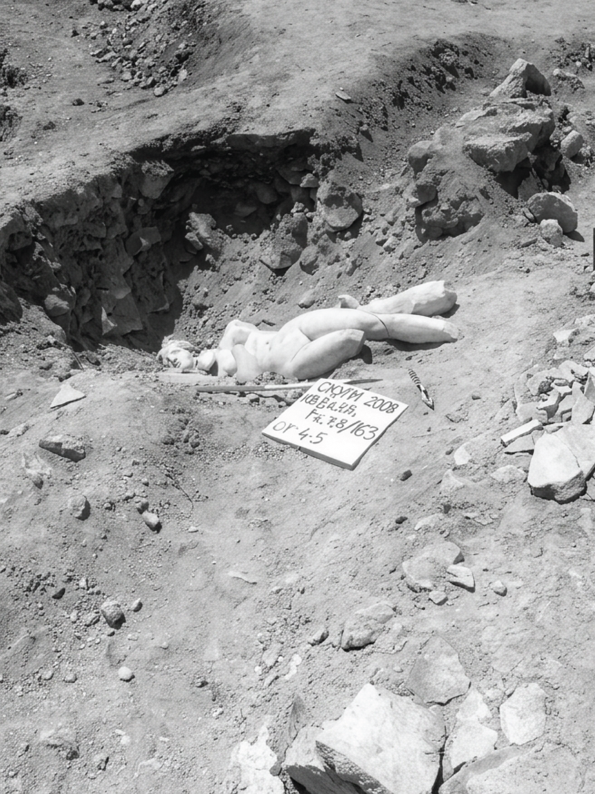

In the excavation photograph, Venus lies on her back in the earth. The pale torso is exposed; the surrounding soil still holds the outline of the find. It is an unusually direct encounter with a sculpture more often considered upright, isolated against a museum wall. Here, before reconstruction, the figure belongs to the ground.
Archaeologists uncovered her in 2008 in the large Roman bath complex at Scupi, on the outskirts of present-day Skopje. Known in antiquity as Colonia Flavia Scupinorum, the city had the public buildings and civic ambitions of a Roman colony. The baths were part of that urban life, and the statue was part of their furnishing.
The sculpture is dated to the second century CE. Macedonian archaeological cataloguing identifies its stone as fine-grained white marble from Paros. Both the material and the subject connect the find to a much wider Mediterranean world: a prized sculptural stone and a goddess whose image had already been reworked for centuries.
Yet the place of discovery gives this Venus her particular history. Speaking to Archaeology magazine in 2008, Skopje City Museum archaeologist Marina Ončevska Todorovska described a figure intended to be seen by people relaxing in the water. The statue offers a glimpse of the baths beyond their surviving masonry: a building furnished for looking as well as bathing.